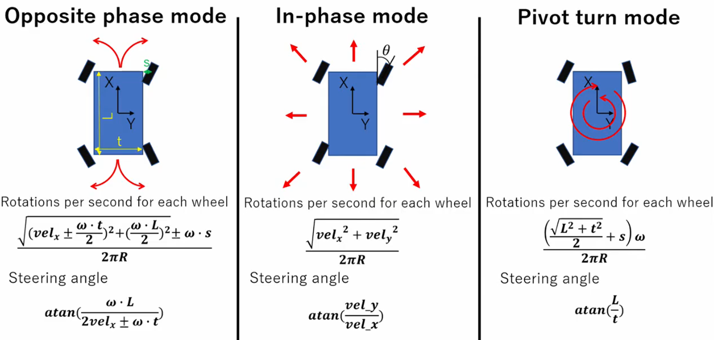

Four Wheel Steering Robot
This four wheel steering robot project simulated a Ranger Mini robot and another four wheel
steering robot in Gazebo for teleoperation, SLAM, Navigation and other functions. Some functions
were also tested on a real four wheel steering robot. A four wheel steering robot usually has
four steering motors with encoders, four driving motors with encoders, motor controllers with
ROS drivers, four separately driven andsteered wheels, a battery, a camera, a lidar, an IMU, a
microncontroller and a computer. A four wheel steering robot has three motion modes: opposite
phase mode, in phase mode and pivot turn mode. Each mode requires a specific combination of four
steering angles and four driving speeds and directions. This project involved software
development in ROS using Python and C++ on Ubuntu Linux and hardware devleopment for sensors,
actuators, and controllers. The concepts and methods used in this project can also be applied to
other four wheel steering robots.
Description of Project
In this project, I accomplished the following tasks:
Understood four wheel steering kinematics and three motion modes.

Used SolidWorks to URDF Exporter to export the CAD model of a four wheel steering robot into a
URDF file.
Simulated a Ranger Mini robot and another four wheel steering robot in Gazebo using open source
ROS packages. Built URDF models for four wheel steering robots and SDF models for Gazebo worlds.
Used URDF transmission for motor joints and ros control, and used Gazebo plugins for IMU, lidar,
camera, ros control, etc. Used controller manager to load joint state controller and four wheel
steering controller.

Tuned and tested SLAM (gmapping, rtabmap), Navigation (move_base, navigation stack), and local
planner (dwa, teb) on four wheel steering robots in Gazebo simulation environment.
Setup and configured four steering servo motors, four driving BLDC motors, encoders, and motor
controllers.
Tuned PID parameters for closed loop speed control of driving motors and closed loop position
control of steering motors.
Developed a serial motor driver in C++ and created a node to subscribe motor command and publish
encoder speed in ROS.
Developed a CAN bus motor driver in Arduino based on CAN bus protocol and used rosserial to
communicate with ROS. Used CAN bus analyzer and module for development.
Developed the hardware interface between motors and ros controller (four wheel steering
controller and joint state controller).

Modified four wheel steering controller for three motion modes.
Published /cmd_vel ROS topic in terminal to control four wheel steering robots in simulation and
in real world.

Developed and tested teleoperation of four wheel steering robots in ROS with a remote joystick
controller.
Setup a NVIDIA Jetson and developed ROS in ARM64 architectures environment with the help of SSH
and remote desktop.
Setup and tested 3D lidar, fisheye camera, ZED camera, PTZ camera, IP camera, etc. in ROS
through Ethernet.
Wired and soldered different types of sensors and actuators, and programmed Arduino to read
sensors and control actuators with relays in ROS and UI.
Wrote many ROS nodes for publishers and subscribers in Python and C++. Used Rviz2, rqt and
PlotJuggler tools to visualize and inspect nodes, topics and data.
Wrote a master launch file to bringup everything in ROS at once and wrote bash scripts to run
terminal commands.
Used Freedom Robotics to transfer data between ROS and Web / Front-end UI.
Used Bitbucket Pipeline for CI/CD. Containerized ROS packages in Docker and used AWS CodeBuild
to build images from Docker file to Bitbucket on ECR.
Managed tasks and projects with Atlassian toolset: Jira, Confluence, Bitbucket, etc.
Conclusion
In this project, a Ranger Mini robot and a four wheel steering robot were simulated for
teleoperation, SLAM, Navigation, and other tasks in Gazebo. After tuning parameters and optimizing
code, the four wheel steering robot were configured, tested and further improved in real world. The
procedures for implementing teleoperation, SLAM, Navigation, and other tasks on four wheel steering
robots in simulation and in real world are very similar since they are both done in ROS. However,
sensors, actuators, controllers and hardwares need to be setup and tested in real world, which takes
more effort and time. Moreover, there are more uncertainties and noises in real world. In general,
four wheel steering robots have lots of flexibility for motion, but they are more complex.